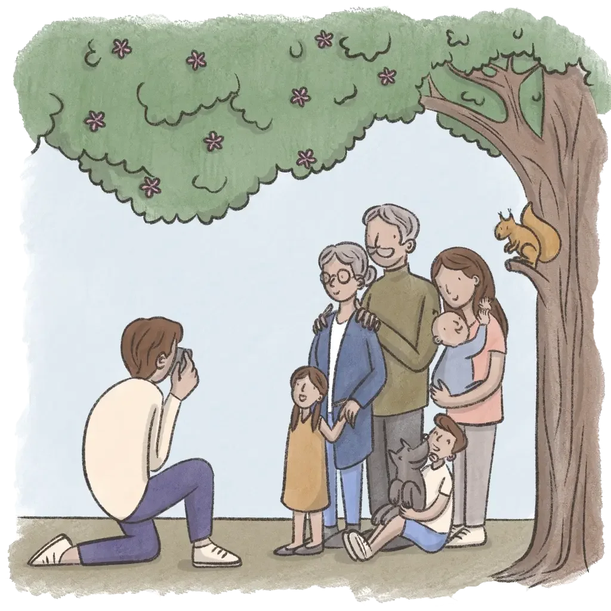
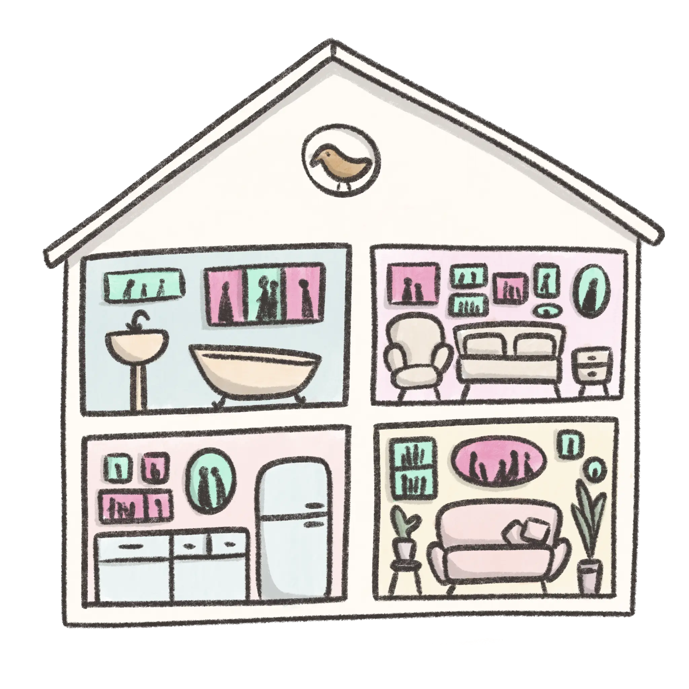

The fastest way to the moments you love
Stress free photo organisation for your family
Stress free photo organisation for your family
Are your photos out of control?

At the start you sorted, shared and maybe even printed them. But with tens of thousands of pictures now on your phone, the endless scrolling to find pictures began.

The unorganised photo pile and the stress around it keeps on getting bigger. With little time to sort and no system to use, you know there are some great shots you may never see again.

So we've designed an app that will organise your photos, help you create wonderful collections and give you back your memories.
Let our AI do the chores
In a few simple steps, go from overwhelm to overjoy!
Focus on what matters
Keepers automatically finds your family photos. It filters out screenshots, memes and identifies similar shots.
Below, you can see visually similar family photos are grouped together into moments. At the bottom, you may notice roughly 9 out of every 10 photos are filtered out.
Effortless face tagging

You show the app examples of what each family member looks like over the years. It automatically find similar ones and tags photos for you.
Here you will see how the app finds all similar photos to the ones that are confirmed. It uses 4 samples to automatically tag over 1000 photos.
Neatly organised
It's the Marie Kondo method for your photos. Except, you don't have to do the hard work.
The app uses a calendar view as the main organisation system. You can easily get to the events or places you are looking for. It helps you relive past memories and improve your visual journaling habit.
Create. Easy like the breeze
With all your photos organised, you can create photo books in minutes. Or share your pictures, create slideshows, playlists & videos for events.
The app comes with a powerful yet easy-to-use search engine. Finding photos is as easy as telling it who, what, where and when.
The Keepers promise
The team behind Keepers are all parents. We know how precious your photos are so we are committed to keeping your families memories safe & secure.
We want you to keep using Keepers for free and earn our income when you purchase prints and books from the app.
We are becoming a Benefit corporation. It is a for profit company with a legal mandate to make decisions that benefits society as well as the shareholders.

We want our children and their children to enjoy this beautiful blue planet. We commit to the 1% for the planet scheme and hope to go further when we can.
So does it work?

Laura, TV producer
“ People expect a TV producer to have their photos organised. I didn't! My family photos were mixed up with thousands of work photos and screenshots. The app did all of the work for me. No more scrolling for me!”

Tash, Dentist
“ Every photo of my son is automatically added to his album. I saw this image there from years ago and it brought such a smile to my face. I never have to worry about adding family members to albums again.”

Jay, SAHM
“ I don't use many apps, and a friend convinced me to help test Keepers. It was easier and better than I expected. I even made a photo book during my kid's gym class. I love how fast & easy it is.”
Be one of the first 1,000 people signing up to receive a 40-page photo book for FREE.